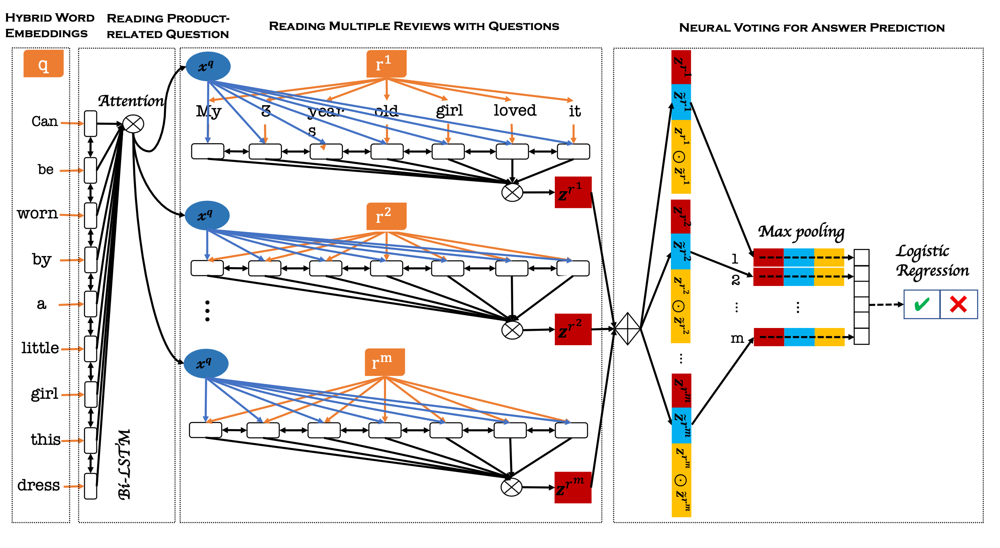

Reading Customer Reviews to Answer Product-related Questions
1 问题定义¶
对于一个特定的产品，用 Q 来表示该产品一系列的 “Yes-No" 类型的问题，用 a ∈ \{Yes, No\} 来表示每个问题 q ∈ Q 的答案，对于每个问题 q，用 R^q 来表示该产品评论中关于问题 q 的所有评论的集合；基于标注的 (q_i,a_i,R^q_i) \in (Q,A,R) 来训练一个二分类模型，在输入新的问题 q^{new} 和它相关的多条评论 R^{q^{new}} 时，模型能够正确预测出答案 a^{new} 。
2 模型描述¶
2.1 模型概述¶
本文提出了一个可以直接输入问题文本和用户评论文本来预测答案的、端到端的神经阅读架构(Neural Reading Architecture, NRA)。它由 4 个神经层构成，分别为混合词嵌入、产品相关的问题阅读、带有问题的多条评论阅读和神经元投票用于答案预测。
首先在混合词嵌入层，将问题序列 q 和每条评论序列 r 转换为混合词嵌入表示 e^q,e^r；然后在产品相关的问题阅读层，将问题 q 的混合词嵌入表示 e^q 先后送入 \text{Bi-LSTM} 和 \text{Attention} 网络来学习问题 q 的上下文表示 x^q；之后在带有问题的多条评论阅读层将问题 q 的上下文表示与评论序列 e^r 的每个词的混合词嵌入进行拼接，送到 \text{Bi-LSTM} + \text{Attention} 网络学习生成多条问题意识的评论表示 z^{r^j}；最后在神经元投票用于答案预测层对 z^{r^j} 进行重构、加权求和、拼接和最大池化后送入逻辑回归模型进行分类预测。
NRA 模型的结构如下图所示。

2.2 细节实现¶
混合词嵌入¶
作为 NRA 模型的输入，首先将问题 q 和它相关的评论 r 的每个词转换为模型可接受的形式。对于一个单词 u，我们使用预训练的、维度为 d 的词向量 e^w 来初始化；此外，我们还采用卷积神经网络(CNN)来从组成单词的每个字符中生成词嵌入 e^c。
假设单词 u 是由 l 个字符 v_{1:l} 组成的，对于每个字符，用维度为 d' 的向量表示
对单词 u 的字符序列 \text{v}_{1:l} 使用 CNN 来编码
将单词 u 的词级表示 e^w 和字符级表示 e^c 进行拼接，得到单词 u 的混合词嵌入
采用以上方法，对问题 q 和它相关的评论 r 进行处理，分别得到混合词嵌入 e^q 、e^{r}。
产品相关的问题阅读¶
首先，采用 \text{Bi-LSTM} 网络来编码问题序列 q (长度为 n )并拼接成每个词的上下文表示
然后对整个问题序列的每个词的上下文表示，采用单次注意力机制来获取整个序列上下文表示的加权和
其中，\text{W}^q \in \mathbb{R}^{2d \times 2d}、\text{v}_q \in \mathbb{R}^{2d} 为参数矩阵。
带有问题的多条评论阅读¶
假设对于问题 q ，有 m 条相关的评论，我们使用 r^i(i \in [i,m]) 来表示第 i 条评论。
首先将每条评论的每个词的混合嵌入与问题 q 的上下文表示 x^q 进行拼接，然后采用 \text{Bi-LSTM} 网络来编码并拼接成每个词的上下文表示
同样采用单次注意力机制来获得问题意识的评论表示
神经元投票用于答案预测¶
在此阶段，我们为最终的答案预测设计一个投票函数，从而在多条问题意识的评论表示中选择出重要的证据。
我们使用 c_{i,j} 来表示第 i 条和第 j 条评论之间的相似度，对 c_{i,j} 进行如下定义
给定第 i 条评论，计算其他评论支持性得分的分布
我们使用 \tilde{z^{r^i}} 来表示第 i 条评论的、包含了从其他评论中获得了支持性信息的嵌入表示
因此，我们可以从不同的角度来表示产品意识的评论：z^{r^i} ，\tilde{z^{r^i}} 和 z^{r^i} \odot \ \tilde{z^{r^i}} 。将它们拼接后进行最大池化来选择出重要的特征
最后，使用逻辑回归模型进行分类
参考文献¶
Miao. Fan, Chao. Feng, Mingming. Sun, Ping. Li, and Haifeng. Wang. Reading Customer Reviews to Answer Product-related Questions. SDM 2019. [paper]